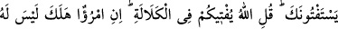
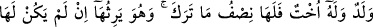
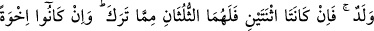
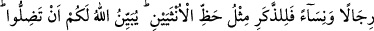
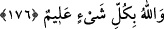

BABASI VE ÇOCUĞU
OLMAYANIN MÎRÂSI
176- “Ölen kişinin çocuğu olmayıp da bir kız kardeşi varsa, bıraktığı malın yarısı
o (kız kardeşi) nindir. Fakat kendisi, (ölen) kız kardeşinin çocuğu yoksa, onun
mîrâsını (tamamen) alır. Eğer (ölenin) iki kız kardeşi varsa, bıraktığının üçte ikisi
onlarındır. Ve eğer (vârisler) erkek kadın bir çok kardeş olursa erkeğe, iki kadının
payı kadar (pay) verilir. Şaşırırsınız diye Allah size (hükmünü) açıklıyor. Allah her
şeyi bilendir.”
Senden fetvâ istiyorlar. De ki: Allah size ana babasız ve çocuksuz kişinin mîrâsı
hakkında hükmünü şöyle açıklıyor:
“İftâ” fetvâ vermek, müphem olan bir şeyi açıklamak, müşkil olan bir meseleyi
aydınlatmak demektir.
“Kelâle”, âcizlikten dolayı güç ve kuvvetin gitmesi anlamındadır. Fakat bu âyette
istiare yapılarak baba ve evlat cihetinden olmayan akrabâ için kullanılmıştır. Bu
akrabâlık, baba ve çocuk yakınlığına nisbetle zayıf olduğu için kelâle denilmiştir.
Kelâle, öldükten sonra kendisine halef olabilecek babası ve evladı olmayana denildiği
gibi, geride kalıp da çocuk, baba ve anne olmayan mîrasçıya da denir. Burada ikincisi,
yâni öldükten sonra geride kendisine varis olacak ana baba ve evlad bırakmayan kimse
kasdedilmiştir.
Rivâyet edildiğine göre Câbir b. Abdullah hastalandığında Rasûlullah (s.a.v.) onu
ziyârete gitmişti. Câbir (r.a.): “Ya Rasûlallah! Ben kelâleyim. Öldükten sonra bana
vâris olacak babam ve evladım yok. Malımı ne yapayım?” diye sormuş, bunun üzerine
bu âyet nâzil olmuştur.
“Ölen kişinin” kız veyâ erkek “çocuğu olmayıp da bir kız kardeşi varsa, bıraktığı
malın yarısı onundur.”, kız kardeşe düşer. Diğer yarısı “asabe” arasında taksim olunur.
Eğer asebeden mîrasçısı yoksa, diğer yarısı da o kız kardeşe bırakılır. Buradaki kız
kardeşten kasıt, sâdece anne bir olan kız kardeş değildir. Çünkü onun hissesi